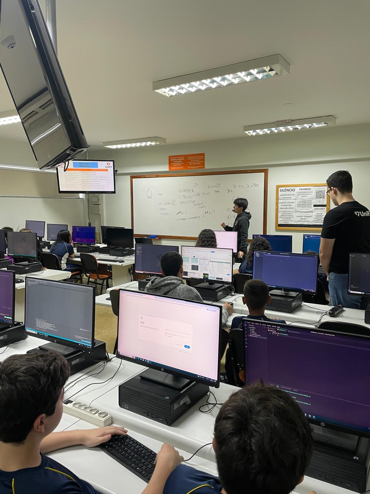

Relatório – 8ª Aula
Data: 27/04/2026
Turma: 8º e 9º ano
Instrutor: Kawan
Relatório – Operadores e Vetores em JavaScript
Na aula realizada no dia 27/04/2026, foi passado sobre operadores aritméticos e vetores (arrays) dentro do JavaScript, como por exemplo os operadores de Incremeto (++), Decremento (--), Resto (%), etc, e os vetores como .Push(), .Shift() e etc.
Em um primeiro momento o Instrutor Kawan fez uma revisão rápida do conteúdo da aula passada que os alunos já tinham realizado uma atividade avaliativa. Após isso, foi explicado as funções de cada um dos operadores matemáticos e, em seguida, vimos a função dos arrays e seus comandos de manipulação. Durante a explicação o instrutor Kawan foi criando e testando os codigos para conseguir mostrar na prática as funções explicadas, enquanto os alunos faziam junto os comandos dentro do VS Code.
Após a explicação, os alunos realizaram uma atividade avaliativa sobre o conteúdo, percebi que os alunos da fileira que eu estava consiguiram realizar com tranquilidade a atividade. As perguntas variávam de funções, regras e resultados da utilização dos operadores e dos arrays. Depois da realização da atividade no google forms, foi feito um kahoot como forma de descontração e fixação do tema da aula.
